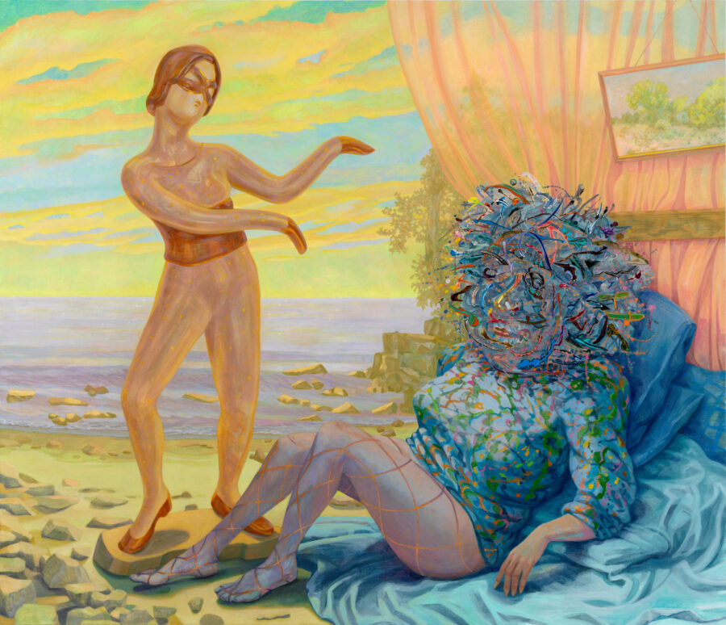

Mary Lou Zelazny: Rendezvous
Mary Lou Zelazny is a significant figure in Chicago’s art community and is often associated with the broader legacy of the Chicago Imagists. Her mixed-media paintings emerge from a lifelong engagement with accumulation, decoration, and transformation. Influenced early by her immigrant grandmother’s inventive reuse of discarded materials, Zelazny developed an approach rooted in collage, maximalist composition, and the tension between excess and structure.
Zelazny’s art explores the ways painting and collage can be used to construct figurative images. From a distance, her works often resemble still-lifes, portraits, or landscapes. On closer inspection, collaged fragments reveal themselves, masquerading as brushstrokes or shaded passages. By incorporating reproductions from magazines, newspapers, advertisements, and fashion catalogues, Zelazny creates perceptual shifts that move viewers between painterly gesture and photographic illusion, prompting new ways of reading what initially appears familiar.
Zelazny has presented numerous solo exhibitions since the 1980s and was the subject of a comprehensive retrospective at the Hyde Park Art Center in 2009. Her work has been exhibited widely in galleries and museums throughout the United States and featured in major survey exhibitions, including Surrealism: The Conjured Life at the Museum of Contemporary Art Chicago and What Came After: Figurative Painting in Chicago 1978–1998 at the Elmhurst Art Museum.
Zelazny earned her education at the School of the Art Institute of Chicago, where she has taught in the Department of Painting and Drawing since 1990.